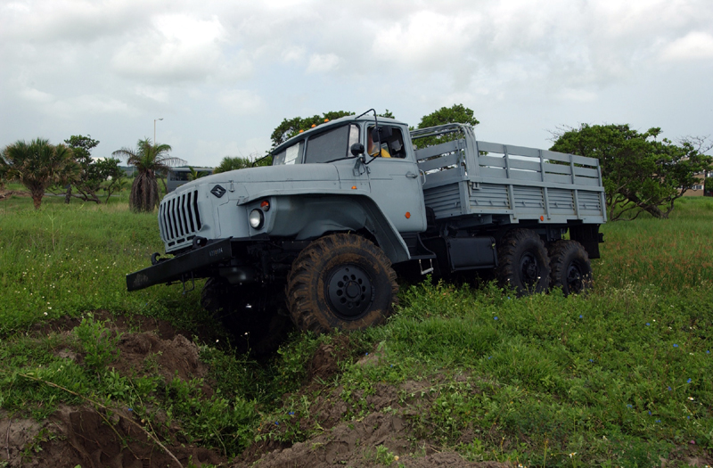
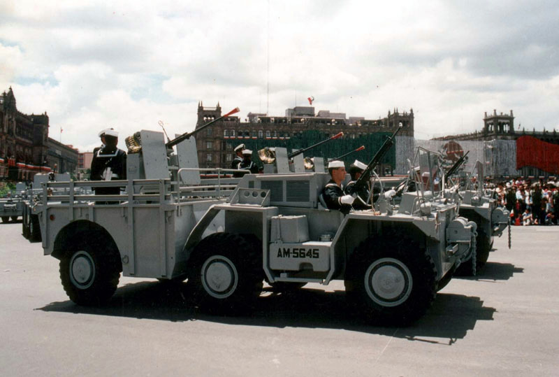

URAL
Características Principales:
Modelo:4320-31
Velocidad Max: 80 Km/hr
Capacidad de carga: 11000 Kg
Peso bruto de remolque: 12000 Kg
Angulo max de ascenso: 32 grados
Potencia:
176 Kw (240hp)
Motor
Diesel: V-8
Capacidad:
27 Elementos

GAMMA GOAT
Características Principales:
Marca:
M-561
Tipo:
GAMMA GOAT
Modelo:
1970
Capacidad:
11 Elementos
Motor:
Diesel